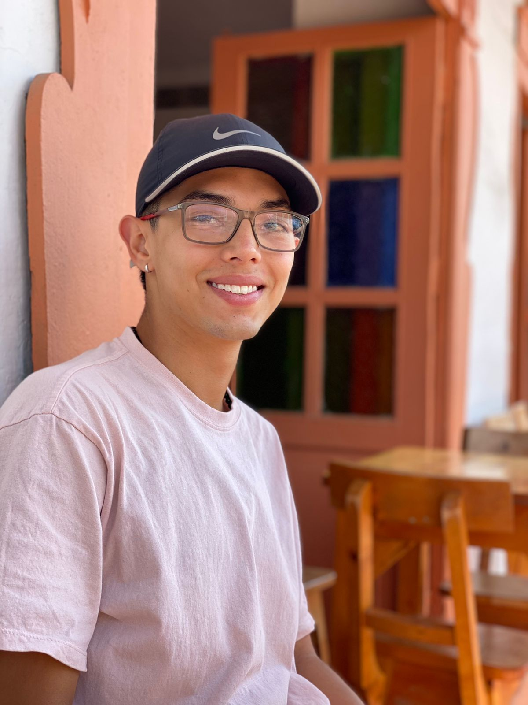

Sobre Mí
Hola, mi nombre es Juan José Noreña Giraldo, tengo 21 años de edad y vivo en Rionegro, Antioquia. Soy estudiante de ingeniería de software y datos en la IU Digital de Antioquia, y esta página es parte de mi proyecto personal. Aquí encontrarás información sobre los temas de hardware que hemos estudiado en clase y un blog personal donde publico mis pensamientos y aprendizajes.
Me apasiona la tecnología y siempre estoy buscando aprender nuevas herramientas y lenguajes de programación. En mi tiempo libre, disfruto leyendo sobre avances tecnológicos, desarrollando proyectos personales y colaborando en proyectos de código abierto.
Blog
Visita mi blog aquíContacto
Si deseas contactarme, por favor escribe a: juanjonore2030@gmail.com